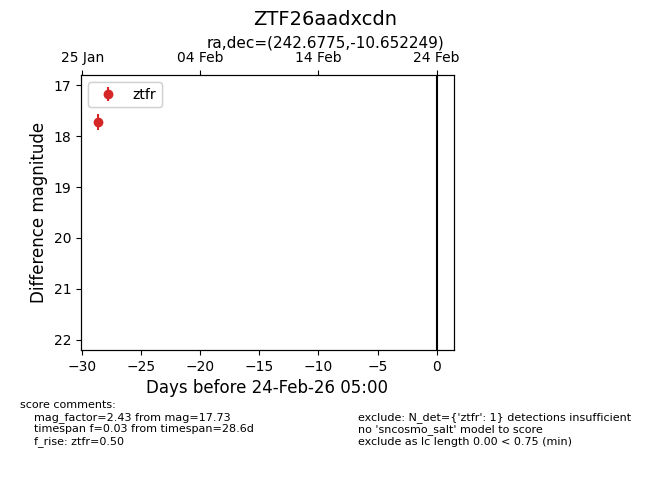
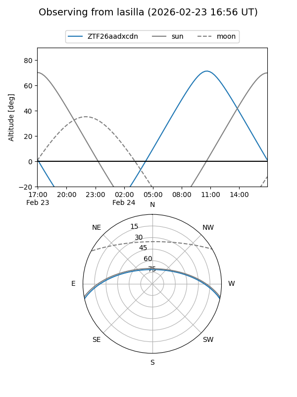
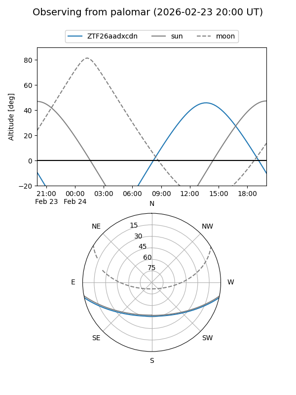

ZTF26aadxcdn
Target ZTF26aadxcdn at 2026-01-26 15:16
Aliases and brokers:
FINK: link
Lasair: link
ALeRCE: link
alt names
ZTF26aadxcdn (ztf,fink_ztf)
Coordinates:
equatorial (ra, dec) = 242.6775,-10.65225
equatorial (HMS+DMS) = 16:10:42.59,-10:39:08.10
galactic (l, b) = (1.7917,+28.68886)
Flags:
Photometry:
last ztfr=17.73
1 ztfr detections
Lightcurve

Visibility


Additional plots